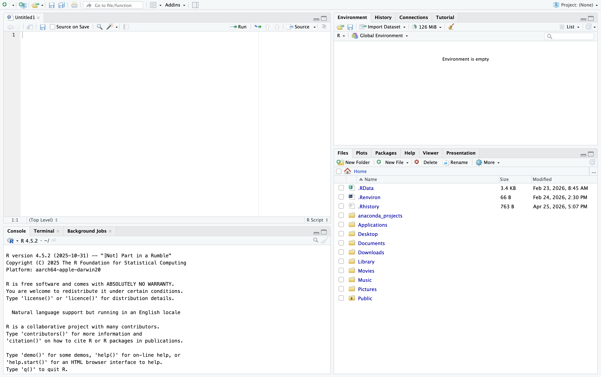
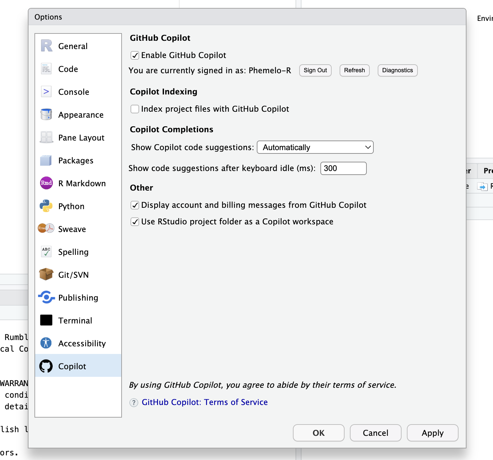
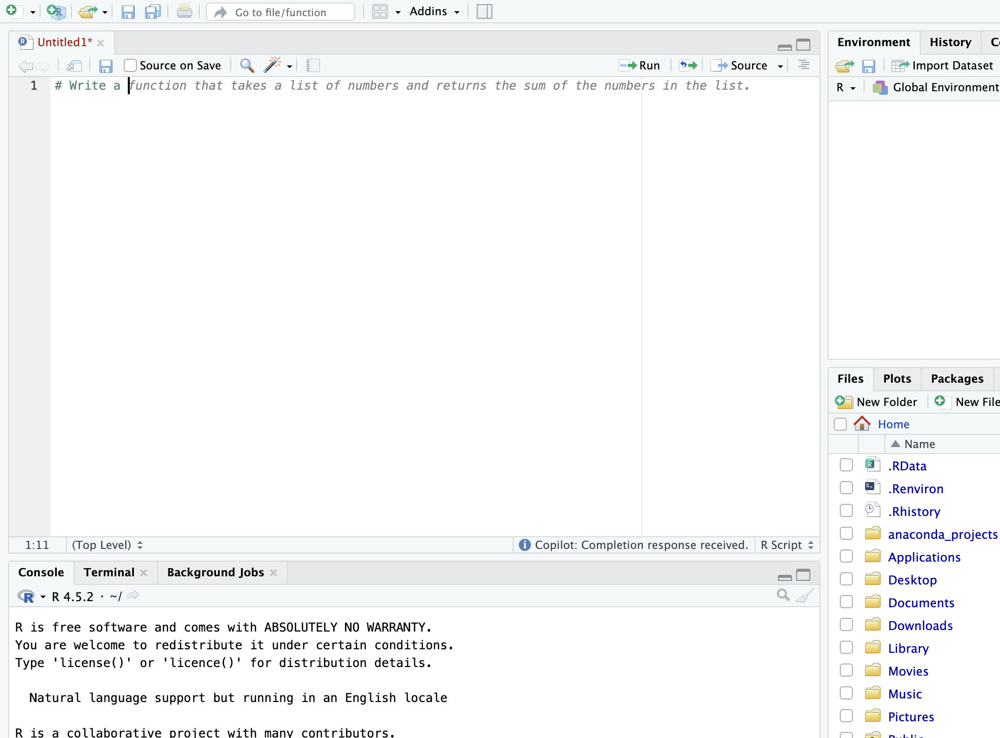

R Fundamentals · 2025-08-12
Introduction to R
A Foundation for Biological Sciences and Spatial Ecology
"The best thing about R is that it was written by statisticians. The worst thing about R is that it was written by statisticians." — Bo Cowgill, Google
What is R?
R is a free, open-source programming language and statistical computing environment, built for data analysis, statistical modelling, and data visualisation. It is the lingua franca of modern quantitative biology, ecology, epidemiology, and bioinformatics.
A brief history
R was created in 1993 at the University of Auckland, New Zealand, by statisticians Ross Ihaka and Robert Gentleman — the language is named after both creators (Ihaka & Gentleman, 1996). It was also a deliberate nod to S, its intellectual predecessor: a statistical language developed at Bell Laboratories in the 1970s by John Chambers and colleagues. Where S was proprietary, Ihaka and Gentleman envisioned something open, collaborative, and free.
In 1997, a group of volunteers formed the R Core Team and the language was released under the GNU General Public Licence (GPL). Today, R is stewarded by the R Foundation for Statistical Computing (Vienna, Austria) and maintained by a global community of thousands of contributors.
Why R specifically for biology and ecology?
-
Decades of ecological, statistical, and spatial packages have
been written in and for R (e.g.,
vegan,ape,terra,sdm). - The vast majority of peer-reviewed ecology journals accept or even require R-based reproducible analyses.
- R integrates seamlessly with LaTeX, Quarto, and R Markdown — the dominant tools for scientific reporting.
- The CRAN Task View for Ecology lists over 80 curated packages for ecological and environmental analysis.
References:
- Ihaka, R. & Gentleman, R. (1996). R: A language for data analysis and graphics. Journal of Computational and Graphical Statistics, 5(3), 299–314.
- R Core Team (2024). R: A language and environment for statistical computing. R Foundation for Statistical Computing, Vienna, Austria. https://www.R-project.org/
Graphical User Interfaces for R
R itself is a command-line language — a bare console where you type commands and receive output. Most users, however, interact with R through a Graphical User Interface (GUI) or Integrated Development Environment (IDE), which provides panels, syntax highlighting, package management, and much more.
Available interfaces
| Interface | Description | Best for |
|---|---|---|
| RStudio | The premier IDE for R, developed by Posit | Most users — beginners to advanced |
| VSCode |
A general-purpose code editor with R extension
(languageserver)
|
Users who already use VSCode for other languages |
| Positron | A new, next-generation IDE by Posit (in active development) | Data scientists using both R and Python |
| Jupyter Notebook | Browser-based, cell-based interface (what you are reading now) | Teaching, reproducible reports, sharing analyses |
| Base R Console | The minimal R terminal, installed with R itself | Debugging, scripting without an IDE |
| Neovim / Emacs | Terminal-based editors with R plugins | Power users who prefer the keyboard |
Our focus: RStudio
RStudio is the gold standard for R development. It is developed and maintained by Posit PBC (formerly RStudio, Inc.) and is available free of charge as RStudio Desktop. RStudio provides:
- A structured four-panel interface
- Syntax highlighting and code completion
- Integrated plot viewer and package manager
- Project management and version control (Git)
- Support for R Markdown and Quarto documents
- GitHub Copilot integration (covered below)
References:
- Posit team (2024). RStudio: Integrated development environment for R. Posit Software, PBC, Boston, MA. https://www.posit.co
Installation
Before you can use R with RStudio, you must install both — in order.
Step 1 — Install R
Download the appropriate installer for your operating system from the Comprehensive R Archive Network (CRAN):
Always download the latest stable release (R ≥ 4.3 is recommended).
Step 2 — Install RStudio Desktop
Download the free RStudio Desktop installer from Posit:
Install RStudio after R — RStudio detects your R installation automatically.
Step 3 — Verify the installation
Open RStudio. In the Console panel (bottom-left), type:
R.version.string
You should see something like:
"R version 4.5.2 (2025-10-31)"
💡 Tip: Keep both R and RStudio updated. Outdated versions can cause package conflicts and security issues. Update R via the
installrpackage on Windows, or by reinstalling from CRAN on macOS/Linux.
The RStudio Interface
When you open RStudio, the workspace is divided into four panels (panes). Understanding each pane is fundamental to working efficiently.
┌────────────────────────┬────────────────────────┐
│ │ │
│ SOURCE EDITOR │ ENVIRONMENT │
│ (top-left) │ (top-right) │
│ │ │
├────────────────────────┼────────────────────────┤
│ │ │
│ CONSOLE │ FILES / PLOTS / │
│ (bottom-left) │ PACKAGES / HELP │
│ │ (bottom-right) │
└────────────────────────┴────────────────────────┘

1. Source Editor (top-left)
This is where you
write and save your R scripts (.R
files). Think of it as your laboratory notebook — a persistent,
editable record of every analysis step.
Key features:
- Syntax highlighting: different colours for functions, strings, numbers, and comments aid readability.
-
Code completion: pressing
Tabmid-word suggests completions. - Smart indentation: R code inside functions is automatically indented.
-
Run code: place your cursor on a line (or
select multiple lines) and press
Ctrl+Enter(Windows/Linux) orCmd+Enter(macOS) to send code to the console. -
Comments: the
#symbol tells R to ignore everything to its right on that line.
2. Console (bottom-left)
The console is the live R interpreter — the engine. Code sent from the source editor, or typed directly here, is executed immediately and output appears below.
-
The
>prompt indicates R is ready for input. -
A
+prompt means R is awaiting the completion of an unfinished expression (e.g., an unclosed bracket). - Use the up/down arrow keys to navigate your command history.
⚠️ Code typed directly into the console is not saved in your script. Always write analyses in the Source Editor.
3. Environment / History (top-right)
The Environment tab lists every object currently loaded into R's working memory (the global environment). For each object you will see its name, type, dimensions, and a preview of its contents.
The History tab records every command you have executed. You can search, select, and resend commands to the console or source editor.
4. Files / Plots / Packages / Help / Viewer (bottom-right)
This multi-tab panel serves several roles:
| Tab | Function |
|---|---|
| Files | A file browser for your project directory |
| Plots | Displays all graphics produced by your code |
| Packages | Lists installed packages; allows installation and loading |
| Help | Displays R documentation for functions and packages |
| Viewer | Renders HTML output (e.g., R Markdown, Shiny apps) |
R Projects
R Projects are one of RStudio's most important features for reproducible science. A project is a self-contained working directory — a folder that holds your scripts, data, and outputs, and configures R's working directory automatically when opened.
Why use projects?
Without projects, file paths are absolute (e.g.,
/Users/yourname/Desktop/analysis/data.csv) and will
break on any other machine. With projects, paths are
relative (e.g., data/data.csv) and your
analysis is fully portable.
Creating a new project
-
Click
Project: (None)in the top-right corner of RStudio. - Select New Project → New Directory → New Project.
-
Give the project a descriptive name (e.g.,
penguin_ecology_2026). - Choose a location on your computer.
- Click Create Project.
RStudio will restart and the project name will appear in the
top-right corner. A .Rproj file is created in your
directory — this is the project anchor.
Recommended project structure
penguin_ecology_2026/
├── data/ # raw data — never modify
├── scripts/ # your R scripts
├── outputs/ # figures, tables, model results
└── README.md # project description
📌 Best practice: Treat raw data as sacred. Never overwrite it. Keep all derived data and figures in separate folders.
Setting Up GitHub Copilot in RStudio
GitHub Copilot is an AI-powered coding assistant developed by GitHub and OpenAI. It suggests code completions in real time, explains functions, and can substantially accelerate your R workflow. RStudio supports Copilot natively from version 2023.09.0 onwards.
⚠️ Note: GitHub Copilot requires a GitHub account and an active Copilot subscription (free for verified students and educators via GitHub Education). All code suggestions should be reviewed critically — Copilot can and does produce incorrect code.
Setup steps
1. Verify your RStudio version Copilot support
requires RStudio ≥ 2023.09.0. Check via
Help > About RStudio.
2. Enable Copilot in RStudio Navigate to:
Tools > Global Options > Copilot Check
"Enable GitHub Copilot" and click
OK.

3. Sign in to GitHub A prompt will appear with an 8-character device code. Visit github.com/login/device, enter the code, and authorise RStudio.
4. Start coding Open any .R script.
Copilot suggestions will appear as greyed-out text as you type.
Press Tab to accept a suggestion, or continue typing
to dismiss it.

Using Copilot responsibly in science
- Always verify that suggested code produces biologically meaningful results.
- Do not submit AI-generated code as your own in assessments without disclosure.
- Use Copilot as a learning aid — read and understand every suggestion it makes.
Basic R Operations
1. Arithmetic
R can be used as an advanced scientific calculator. All standard mathematical operations are available.
# Basic arithmetic
2 + 2 # Addition
5 * 6 / 4 # Multiplication and division
2^3 # Exponentiation
(5 + 4) / 3 # Parentheses enforce order of operations
sqrt(144) # Square root
log(10) # Natural logarithm
log10(100) # Base-10 logarithm
exp(1) # Euler's number (e)
pi # π — a built-in constantOutput
R evaluates expressions following standard mathematical precedence (BODMAS/PEMDAS). When in doubt, use parentheses.
2. Assignment and Objects
In R, we store values in objects using the
assignment operator <- (keyboard shortcut:
Alt+- on Windows, Option+- on macOS).
Objects persist in the global environment for the
duration of your session.
# Assigning ecological values to objects
krill_density <- 12.4 # individuals per m²
adder_records <- 58 # count at a site
# Objects can be used in further calculations
krill_density * 100 # density per 100 m²Output
# Use descriptive names — avoid single letters like 'a' or 'x'
mean_flipper_length_mm <- 200.9 # example: Gentoo penguin
body_mass_kg <- 5.1 # example: Gentoo penguin in kg
# Print an object by simply typing its name
adder_recordsOutput
3. The Comment (#)
The # symbol tells R to ignore everything to its
right. Use comments liberally — well-commented
code is a hallmark of reproducible science.
# This entire line is a comment
x <- 5 # This is an inline comment — x stores the value 5
Functions
Functions are pre-written blocks of code that
perform specific tasks. They accept
arguments (inputs) and return
values (outputs). In R, functions are called with
the syntax function_name(argument1, argument2, ...).
# The c() function — concatenate values into a vector
flipper_lengths <- c(181, 186, 195, 193, 190, 181, 195, 182, 191)
# Apply mathematical functions to the vector
mean(flipper_lengths) # Arithmetic mean
median(flipper_lengths) # Median
sd(flipper_lengths) # Standard deviation
var(flipper_lengths) # Variance
range(flipper_lengths) # Minimum and maximum
length(flipper_lengths) # Number of elementsOutput
- 181
- 195
# Access documentation for any function with ?
?mean
# Or use help()
help(sd)
# For a broader search across all installed packages
??ecologicalNamed arguments
Many functions accept named arguments that
control their behaviour. For example, mean() has a
na.rm argument to handle missing values:
# Missing values (NA) propagate through calculations by default
weights_with_missing <- c(3750, 3800, NA, 3250, 4200)
mean(weights_with_missing) # Returns NAOutput
mean(weights_with_missing, na.rm = TRUE) # Removes NAs before calculatingOutput
Data Types
R has six fundamental data types. Understanding them is essential for avoiding type-related errors in analysis.
| Type | Description | Example |
|---|---|---|
| Numeric | Real numbers (doubles) |
3.14, 200.9, -0.5
|
| Integer | Whole numbers | 1L, 58L, 344L |
| Character | Text strings |
"Adelie",
"Biscoe"
|
| Logical | Boolean values | TRUE, FALSE |
| Factor | Ordered or unordered categories |
factor(c("Low","High"))
|
| Complex | Complex numbers (rare) | 2 + 3i |
# Creating vectors of each type
numeric_vec <- c(3.14, 200.9, 48.7)
integer_vec <- c(1L, 58L, 344L) # The L suffix forces integer type
character_vec <- c("Adelie", "Chinstrap", "Gentoo")
logical_vec <- c(TRUE, FALSE, TRUE, TRUE)
# Factors — categorical variables with defined levels
island_vec <- factor(c("Biscoe", "Dream", "Torgersen", "Biscoe", "Dream"))
sex_vec <- factor(c("male", "female", "female", "male"),
levels = c("female", "male")) # specify level order
# Check the type of any object
class(numeric_vec)
class(character_vec)
class(island_vec)Output
# Type coercion — R resolves mixed types by promoting to a more general type
mixed <- c(1, "Adelie", TRUE)
class(mixed) # Everything becomes character — the most general typeOutput
mixedOutput
- '1'
- 'Adelie'
- 'TRUE'
# Explicit type conversion
as.numeric("3.14")
as.character(200.9)
as.integer(3.99) # truncates, not rounds
as.logical(0) # 0 is FALSE; any non-zero is TRUEOutput
💡 Ecological relevance: Misidentified data types are a common source of bugs. A species name coded as a factor when you expected a character string, or a site ID stored as a number, can silently corrupt analyses. Always inspect types with
class()after loading data.
Data Structures
R organises data in several structures. Each has specific properties and use cases.
1. Vectors
The most fundamental structure in R — a one-dimensional sequence of values of the same type.
# Vectors
bill_lengths <- c(39.1, 39.5, 40.3, 36.7, 39.3, 38.9)
species_names <- c("Adelie", "Adelie", "Adelie", "Chinstrap", "Gentoo", "Gentoo")
# Generate sequences
year_sequence <- seq(from = 2007, to = 2009, by = 1)
rep_sequence <- rep(c("A", "B", "C"), times = 3) # repeat elements
length(bill_lengths)
summary(bill_lengths)Output
Min. 1st Qu. Median Mean 3rd Qu. Max. 36.70 38.95 39.20 38.97 39.45 40.30
2. Matrices
A two-dimensional array of values, all of the same type. Useful for linear algebra and mathematical operations.
# Create a matrix — specify rows and columns
morphology_matrix <- matrix(
data = c(39.1, 181, 3750,
39.5, 186, 3800,
40.3, 195, 3250),
nrow = 3, # 3 rows
ncol = 3, # 3 columns
byrow = TRUE # fill row by row
)
colnames(morphology_matrix) <- c("bill_mm", "flipper_mm", "mass_g")
rownames(morphology_matrix) <- c("Ind_1", "Ind_2", "Ind_3")
morphology_matrixOutput
| bill_mm | flipper_mm | mass_g | |
|---|---|---|---|
| Ind_1 | 39.1 | 181 | 3750 |
| Ind_2 | 39.5 | 186 | 3800 |
| Ind_3 | 40.3 | 195 | 3250 |
3. Data Frames
The workhorse of R data analysis. A data frame is a rectangular table where:
- Each column is a variable (can be a different type).
- Each row is an observation.
- All columns have the same number of rows.
# Constructing a data frame manually
penguin_sample <- data.frame(
species = c("Adelie", "Gentoo", "Chinstrap"),
island = c("Torgersen", "Biscoe", "Dream"),
bill_length = c(39.1, 47.3, 49.2),
body_mass_g = c(3750, 5200, 3900),
sex = factor(c("male", "female", "female"))
)# Essential inspection functions
str(penguin_sample) # Structure: types and dimensionsOutput
'data.frame': 3 obs. of 5 variables: $ species : chr "Adelie" "Gentoo" "Chinstrap" $ island : chr "Torgersen" "Biscoe" "Dream" $ bill_length: num 39.1 47.3 49.2 $ body_mass_g: num 3750 5200 3900 $ sex : Factor w/ 2 levels "female","male": 2 1 1
head(penguin_sample) # First 6 rowsOutput
| species | island | bill_length | body_mass_g | sex | |
|---|---|---|---|---|---|
| <chr> | <chr> | <dbl> | <dbl> | <fct> | |
| 1 | Adelie | Torgersen | 39.1 | 3750 | male |
| 2 | Gentoo | Biscoe | 47.3 | 5200 | female |
| 3 | Chinstrap | Dream | 49.2 | 3900 | female |
summary(penguin_sample) # Statistical summary of each columnOutput
species island bill_length body_mass_g
Length:3 Length:3 Min. :39.10 Min. :3750
Class :character Class :character 1st Qu.:43.20 1st Qu.:3825
Mode :character Mode :character Median :47.30 Median :3900
Mean :45.20 Mean :4283
3rd Qu.:48.25 3rd Qu.:4550
Max. :49.20 Max. :5200
sex
female:2
male :1
# Access a column with the $ operator
penguin_sample$species
penguin_sample$bill_lengthOutput
- 'Adelie'
- 'Gentoo'
- 'Chinstrap'
- 39.1
- 47.3
- 49.2
4. Lists
Lists are the most flexible data structure — they can contain objects of any type and any length, including other lists. They are commonly used as outputs of statistical models.
# A list can mix data types and structures freely
ecology_list <- list(
site_name = "Torgersen Island",
survey_years = c(2007, 2008, 2009),
measurements = penguin_sample,
notes = "LTER breeding study"
)
# Access list elements by name (with $) or position (with [[]])
ecology_list$site_name
ecology_list[["survey_years"]]
ecology_list[[3]] # Returns the data frameOutput
- 2007
- 2008
- 2009
| species | island | bill_length | body_mass_g | sex |
|---|---|---|---|---|
| <chr> | <chr> | <dbl> | <dbl> | <fct> |
| Adelie | Torgersen | 39.1 | 3750 | male |
| Gentoo | Biscoe | 47.3 | 5200 | female |
| Chinstrap | Dream | 49.2 | 3900 | female |
5. Arrays
Multi-dimensional extensions of matrices. Particularly common in spatial ecology (e.g., raster stacks, species distribution grids).
# A 3D array — think raster layers for different years
spatial_array <- array(
data = 1:24,
dim = c(4, 3, 2), # 4 rows, 3 columns, 2 layers
dimnames = list(
paste0("row_", 1:4),
paste0("col_", 1:3),
c("year_2008", "year_2009")
)
)
spatial_arrayOutput
- 1
- 2
- 3
- 4
- 5
- 6
- 7
- 8
- 9
- 10
- 11
- 12
- 13
- 14
- 15
- 16
- 17
- 18
- 19
- 20
- 21
- 22
- 23
- 24
Indexing
Indexing is the technique of extracting specific
elements from an object using square brackets []. It
is one of the most frequently used operations in R.
# --- Vector indexing ---
bill_lengths <- c(39.1, 39.5, 40.3, 36.7, 39.3, 38.9)
bill_lengths[1] # First element (R is 1-indexed, not 0-indexed)
bill_lengths[3] # Third element
bill_lengths[c(1, 3)] # First and third elements
bill_lengths[-2] # All elements EXCEPT the second
bill_lengths[bill_lengths > 39] # Logical indexing — elements > 39Output
- 39.1
- 40.3
- 39.1
- 40.3
- 36.7
- 39.3
- 38.9
- 39.1
- 39.5
- 40.3
- 39.3
# --- Data frame indexing [row, column] ---
# Leaving either blank selects all
penguin_sample[1, ] # Entire first row
penguin_sample[, 2] # Entire second column
penguin_sample[2, 3] # Row 2, column 3 (single value)Output
| species | island | bill_length | body_mass_g | sex | |
|---|---|---|---|---|---|
| <chr> | <chr> | <dbl> | <dbl> | <fct> | |
| 1 | Adelie | Torgersen | 39.1 | 3750 | male |
- 'Torgersen'
- 'Biscoe'
- 'Dream'
# Column access by name (most readable — preferred)
penguin_sample[, "species"]
penguin_sample$body_mass_gOutput
- 'Adelie'
- 'Gentoo'
- 'Chinstrap'
- 3750
- 5200
- 3900
# Logical row filtering
penguin_sample[penguin_sample$body_mass_g > 4000, ] # Large penguins onlyOutput
| species | island | bill_length | body_mass_g | sex | |
|---|---|---|---|---|---|
| <chr> | <chr> | <dbl> | <dbl> | <fct> | |
| 2 | Gentoo | Biscoe | 47.3 | 5200 | female |
Packages
R's true power comes from its package ecosystem. Packages are collections of functions, data, and documentation that extend base R. As of 2024, CRAN hosts over 21,000 packages.
Installing and loading packages
# Install a package from CRAN (only needed once)
# install.packages("tidyverse")
# install.packages("palmerpenguins")
# Load a package into the current session (needed every session)
library(tidyverse)
library(palmerpenguins)Output
── Attaching core tidyverse packages ─────────────────────────────────── tidyverse 2.0.0 ──
✔ dplyr 1.2.0 ✔ readr 2.1.6
✔ forcats 1.0.1 ✔ stringr 1.6.0
✔ ggplot2 4.0.2 ✔ tibble 3.3.1
✔ lubridate 1.9.5 ✔ tidyr 1.3.2
✔ purrr 1.2.1
── Conflicts ───────────────────────────────────────────────────── tidyverse_conflicts() ──
✖ dplyr::filter() masks stats::filter()
✖ dplyr::lag() masks stats::lag()
ℹ Use the conflicted package (<http://conflicted.r-lib.org/>) to force all conflicts to become errors
Attaching package: ‘palmerpenguins’
The following objects are masked from ‘package:datasets’:
penguins, penguins_raw
# Verify a package is loaded
"tidyverse" %in% (.packages()) # Should return TRUE
# Check the version of an installed package
packageVersion("tidyverse")
# Update all installed packages
# update.packages(ask = FALSE)Output
[1] ‘2.0.0’
Key packages for biological sciences and spatial ecology
| Domain | Packages |
|---|---|
| Data wrangling |
tidyverse, dplyr,
tidyr, readr
|
| Visualisation |
ggplot2, patchwork,
ggrepel, viridis
|
| Statistical modelling |
lme4, nlme, MASS,
glmmTMB
|
| Community ecology | vegan, BiodiversityR |
| Phylogenetics | ape, phytools |
| Spatial data |
sf, terra, stars,
tmap
|
| Species distribution modelling |
sdm, biomod2, ENMeval
|
| Bioinformatics | Bioconductor packages |
Search the full CRAN catalogue: https://cran.r-project.org/web/packages/
Loading and Inspecting Real Data
Most analyses begin with importing data from an external file. Always inspect data immediately after loading — never analyse data you have not examined.
# Load the Palmer Penguins dataset — a real ecological dataset
# used throughout this course
library(palmerpenguins)
data("penguins") # Load the clean version into your environment# Three layers of inspection — run all three every time you load new data
head(penguins) # First 6 rows: get a feel for the dataOutput
| species | island | bill_length_mm | bill_depth_mm | flipper_length_mm | body_mass_g | sex | year |
|---|---|---|---|---|---|---|---|
| <fct> | <fct> | <dbl> | <dbl> | <int> | <int> | <fct> | <int> |
| Adelie | Torgersen | 39.1 | 18.7 | 181 | 3750 | male | 2007 |
| Adelie | Torgersen | 39.5 | 17.4 | 186 | 3800 | female | 2007 |
| Adelie | Torgersen | 40.3 | 18.0 | 195 | 3250 | female | 2007 |
| Adelie | Torgersen | NA | NA | NA | NA | NA | 2007 |
| Adelie | Torgersen | 36.7 | 19.3 | 193 | 3450 | female | 2007 |
| Adelie | Torgersen | 39.3 | 20.6 | 190 | 3650 | male | 2007 |
str(penguins) # Structure: variable types and dimensionsOutput
tibble [344 × 8] (S3: tbl_df/tbl/data.frame) $ species : Factor w/ 3 levels "Adelie","Chinstrap",..: 1 1 1 1 1 1 1 1 1 1 ... $ island : Factor w/ 3 levels "Biscoe","Dream",..: 3 3 3 3 3 3 3 3 3 3 ... $ bill_length_mm : num [1:344] 39.1 39.5 40.3 NA 36.7 39.3 38.9 39.2 34.1 42 ... $ bill_depth_mm : num [1:344] 18.7 17.4 18 NA 19.3 20.6 17.8 19.6 18.1 20.2 ... $ flipper_length_mm: int [1:344] 181 186 195 NA 193 190 181 195 193 190 ... $ body_mass_g : int [1:344] 3750 3800 3250 NA 3450 3650 3625 4675 3475 4250 ... $ sex : Factor w/ 2 levels "female","male": 2 1 1 NA 1 2 1 2 NA NA ... $ year : int [1:344] 2007 2007 2007 2007 2007 2007 2007 2007 2007 2007 ...
summary(penguins) # Statistical summary: ranges, NAs, factor levelsOutput
species island bill_length_mm bill_depth_mm
Adelie :152 Biscoe :168 Min. :32.10 Min. :13.10
Chinstrap: 68 Dream :124 1st Qu.:39.23 1st Qu.:15.60
Gentoo :124 Torgersen: 52 Median :44.45 Median :17.30
Mean :43.92 Mean :17.15
3rd Qu.:48.50 3rd Qu.:18.70
Max. :59.60 Max. :21.50
NA's :2 NA's :2
flipper_length_mm body_mass_g sex year
Min. :172.0 Min. :2700 female:165 Min. :2007
1st Qu.:190.0 1st Qu.:3550 male :168 1st Qu.:2007
Median :197.0 Median :4050 NA's : 11 Median :2008
Mean :200.9 Mean :4202 Mean :2008
3rd Qu.:213.0 3rd Qu.:4750 3rd Qu.:2009
Max. :231.0 Max. :6300 Max. :2009
NA's :2 NA's :2
# The Palmer Penguins dataset
# 344 observations of 3 penguin species
# (Adelie, Chinstrap, Gentoo) on 3 islands in the Palmer Archipelago, Antarctica
# Source: Gorman et al. (2014); Horst, Hill & Gorman (2020)
# DOI: https://doi.org/10.5281/zenodo.3960218
# Dimensions
nrow(penguins) # Number of rows (observations)
ncol(penguins) # Number of columns (variables)
dim(penguins) # Both at onceOutput
- 344
- 8
# Reading data from files (the most common real-world case)
# CSV files (comma-separated values) — the universal format
# data <- read.csv("data/my_file.csv") # Base R
# data <- readr::read_csv("data/my_file.csv") # Tidyverse (preferred)
# Excel files
# install.packages("readxl")
# data <- readxl::read_excel("data/my_file.xlsx")
# Always verify after loading
# head(data)
# str(data)
# summary(data)The golden rule of data inspection
"Look at your data from every angle before you model it."
Check for:
-
Missing values (
NA) — how many? where? random or systematic? - Implausible values — a penguin with a body mass of 0 g?
-
Unexpected factor levels — typos in species names (
"adelie"vs"Adelie") - Wrong data types — dates stored as characters
Getting Help
R has an excellent built-in help system and a large, welcoming community.
Built-in help
?mean # Opens the documentation for mean()
help(summary) # Equivalent to ?summary
??penguin # Broad search across all installed packages — finds palmerpenguins
example(hist) # Runs the examples from a function's documentationOnline resources
| Resource | URL |
|---|---|
| Stack Overflow (R tag) | https://stackoverflow.com/questions/tagged/r |
| RStudio Cheatsheets | https://posit.co/resources/cheatsheets/ |
| CRAN Task Views (ecology) | https://cran.r-project.org/web/views/Environmetrics.html |
| R for Data Science (free book) | https://r4ds.hadley.nz |
| Advanced R (free book) | https://adv-r.hadley.nz |
| Bioconductor (bioinformatics) | https://www.bioconductor.org |
💡 When posting a question on Stack Overflow, always include a reproducible example (
reprex). Thereprexpackage makes this easy.
A First Complete Example
Let us put everything together with a brief but complete analysis using the Palmer Penguins dataset.
library(palmerpenguins)
# 1. Load and inspect
data("penguins")
summary(penguins)# 2. Basic summary statistics by species
# (We will learn tidyverse syntax for this in the next notebook)
tapply(penguins$body_mass_g, penguins$species, mean, na.rm = TRUE)# 3. A quick base-R visualisation (we cover ggplot2 in Notebook 3)
boxplot(body_mass_g ~ species,
data = penguins,
main = "Body Mass by Species — Palmer Penguins",
xlab = "Species",
ylab = "Body Mass (g)",
col = c("darkorange", "purple", "cyan4"),
notch = TRUE)# 4. Save your work — write a clean dataset to file
# (Remove rows with any NA before saving)
penguins_clean <- penguins[complete.cases(penguins), ]
# write.csv(penguins_clean, "data/penguins_clean.csv", row.names = FALSE)
# Or with readr (preferred — no row names added by default):
# readr::write_csv(penguins_clean, "data/penguins_clean.csv")
cat("Clean dataset has", nrow(penguins_clean), "rows and",
ncol(penguins_clean), "columns.\n")Summary
In this notebook, you have learned:
- The origins and design philosophy of R as an open-source statistical language
- The main GUIs and IDEs available for R, with RStudio as the course standard
- How to navigate the four RStudio panels effectively
- How to create and structure R Projects for reproducible research
- How to set up GitHub Copilot in RStudio
- The core data types (numeric, integer, character, logical, factor) and data structures (vector, matrix, data frame, list, array)
- How to index objects to extract subsets of data
- How to install and load packages
- How to load, inspect, and save data
References
- Gorman, K.B., Williams, T.D. & Fraser, W.R. (2014). Ecological sexual dimorphism and environmental variability within a community of Antarctic penguins. PLOS ONE, 9(3), e90081. https://doi.org/10.1371/journal.pone.0090081
- Horst, A.M., Hill, A.P. & Gorman, K.B. (2020). palmerpenguins: Palmer Archipelago (Antarctica) penguin data. R package version 0.1.0. https://doi.org/10.5281/zenodo.3960218
- Ihaka, R. & Gentleman, R. (1996). R: A language for data analysis and graphics. Journal of Computational and Graphical Statistics, 5(3), 299–314.
- R Core Team (2024). R: A language and environment for statistical computing. R Foundation for Statistical Computing, Vienna, Austria. https://www.R-project.org/
- Wickham, H. & Grolemund, G. (2023). R for Data Science (2nd ed.). O'Reilly Media. https://r4ds.hadley.nz
You’ve reached the end of this notebook.
Return to all notebooks